ClinicusMed · Dossiê Clinicus — Padrão de Excelência
Nv. 1
0 XP
🎯 O que você vai conseguir fazer depois desse capítulo
Descrever a pele como órgão (extensão, funções) e suas 3 camadas: epiderme, derme e hipoderme
Nomear, em ordem, os 5 estratos da epiderme da pele espessa e a função de cada um
Diferenciar pele fina de pele espessa pela histologia (e pelo critério de espessura da epiderme)
Distinguir queratinócitos de não queratinócitos: melanócitos, células de Langerhans, linfócitos e células de Merkel
Explicar a síntese de melanina (tirosina, tirosinase, melanossomo) e o controle hormonal da pigmentação
Diferenciar derme papilar de derme reticular e descrever a hipoderme
Associar Meissner, Pacini e Ruffini ao tipo de estímulo que detectam
Descrever folículo piloso, glândulas sebáceas, sudoríparas écrinas e apócrinas e a unha
Relacionar a histologia com melanoma (ABCDE), acne, psoríase e queimaduras
🧴 A Pele — Generalidades e Funções
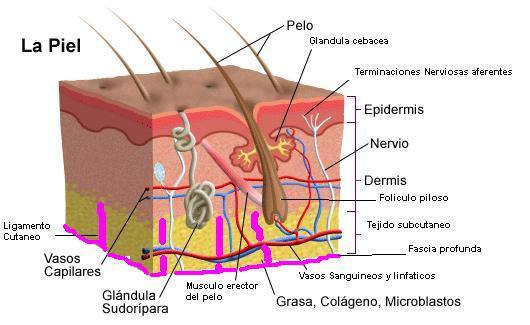
Esquema da pele (legendas em espanhol): epiderme, derme, tecido subcutâneo, folículo piloso, glândulas sebácea e sudorípara, músculo eretor do pelo, vasos e terminações nervosas aferentes
🟢 Pele (tegumento): recobre toda a superfície externa do organismo e é o maior órgão funcional do corpo humano, cobrindo de 1,5 a 2 m² num adulto médio. Nas zonas mucocutâneas ela se continua com as mucosas.
Função
Como a pele cumpre
Barreira
Contra a invasão de microrganismos
Proteção
Contra ações mecânicas e químicas, calor, frio e radiação ultravioleta
Termorregulação
Regulação da temperatura corporal (sudorese, vasos, gordura subcutânea)
Equilíbrio hídrico
Evita a perda de líquidos (estrato córneo + lipídios intercelulares)
Absorção e secreção
Capacidade de absorver substâncias e de secretar (suor, sebo)
Defesa imunitária
Elo importante da defesa imune (células de Langerhans, linfócitos)
Função endócrina
Também tem função endócrina (ex.: síntese de vitamina D na pele, conhecimento complementar)
💡 Hot Spot: as funções da pele são muito variadas — em prova, costuma-se pedir para listar mais de uma (barreira, proteção, termorregulação, equilíbrio hídrico, absorção/secreção, imunidade, endócrina e sensorial).
🧴 Estrutura Geral e Superfície da Pele
A pele se compõe de duas camadas: a epiderme (externa) e a derme ou cório (interna). As duas formam uma massa compacta que repousa sobre uma camada subjacente de tecido conjuntivo mais frouxo, o tecido celular subcutâneo ou hipoderme.
Camada
Natureza
Epiderme
Epitélio plano (pavimentoso) estratificado queratinizado — origem epitelial
Derme (cório)
Tecido conjuntivo espesso, com duas camadas pouco nítidas: papilar e reticular
Hipoderme
Tecido subcutâneo, rico em tecido adiposo; fica abaixo da pele propriamente dita
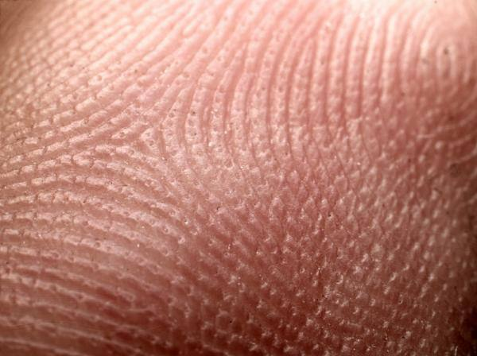
Superfície da pele da polpa digital: cristas papilares (cristas de fricção) separadas por sulcos — base das impressões digitais
Superfície da pele
Caracteriza-se por sulcos finos que formam campos poligonais ou romboidais.
Os sulcos mais profundos separam as cristas papilares (cristas de fricção).
As cristas formam padrões exclusivos de cada indivíduo, que se mantêm sem modificação durante toda a vida — a base das impressões digitais (datiloscopia) na identificação de pessoas.
Junção dermoepidérmica
A transição entre epiderme e derme aparece como uma linha limitante ondulada e irregular, por causa das papilas dérmicas que penetram na epiderme.
🧴 Epiderme — Visão Geral e Tipos Celulares
A epiderme é um epitélio plano estratificado cuja função principal é proteger contra agressões do meio e contra a perda de líquidos. Ela produz uma membrana externa protetora, o estrato córneo, formado por células planas mortas que contêm o complexo proteico queratina e que são cimentadas por lipídios intercelulares.
Grupo
Células
Função
Queratinócitos
A maior parte das células da epiderme; sofrem queratinização
Formam a barreira queratinizada
Não queratinócitos
Melanócitos
Produzem o pigmento melanina
Células de Langerhans
Defesa imunitária (apresentação de antígenos)
Linfócitos
Defesa imunitária
Células de Merkel
Mecanorreceptoras
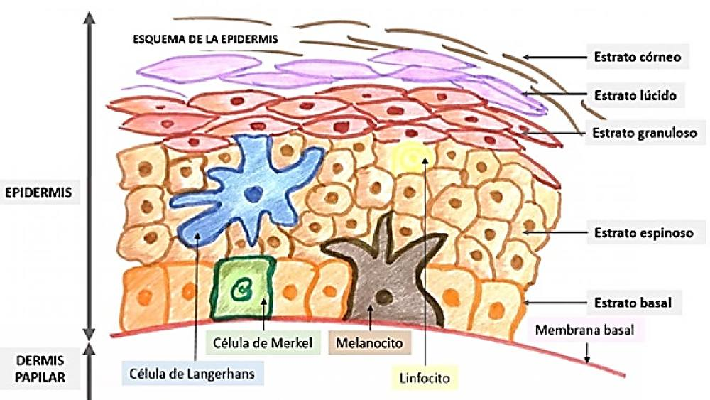
Esquema da epiderme (legendas em espanhol): estratos córneo, lúcido, granuloso, espinhoso e basal, com células de Merkel, de Langerhans, melanócito e linfócito; abaixo, membrana basal e derme papilar
💡 Hot Spot: os termos pele fina (cerca de 0,1 mm) e pele espessa (mais de 1 mm) referem-se à espessura da epiderme — não à espessura total da pele (que depende da derme).
🧴 Pele Espessa x Pele Fina
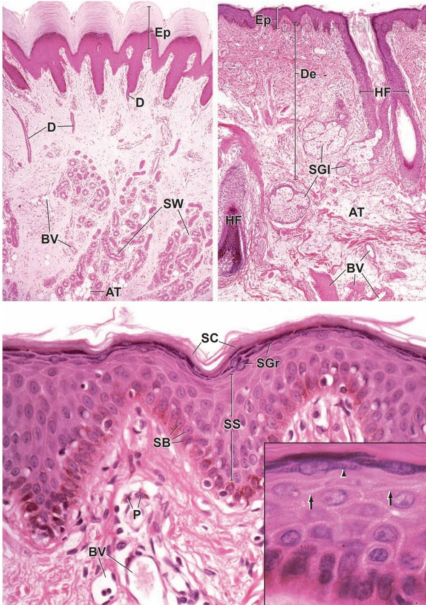
Acima à esquerda: pele espessa (Ep epiderme; D derme; SW glândulas sudoríparas; AT tecido adiposo; BV vasos). Acima à direita: pele fina com folículo piloso (HF) e glândulas sebáceas (SGl). Abaixo: detalhe da epiderme com estratos basal (SB), espinhoso (SS), granuloso (SGr) e córneo (SC)
Característica
Pele espessa (> 1 mm)
Pele fina (~0,1 mm)
Onde
Palmas das mãos e plantas dos pés
Maior parte do corpo, como a face
Estrato córneo
Espesso
Mais estreito (principal razão da epiderme mais delgada)
Estrato lúcido
Presente
Ausente
Estrato granuloso
3 a 5 camadas
Uma única camada
Estrato espinhoso
Várias camadas (≥ 3-4)
Menos camadas celulares
Folículos pilosos
Ausentes (complemento padrão)
Presentes (complemento padrão)
🧠 Mnemônico: pele espessa = palma e planta; a fina "perde" o estrato lúcido e tem só 1 camada de granuloso.
🧴 Os 5 Estratos da Epiderme (Pele Espessa)
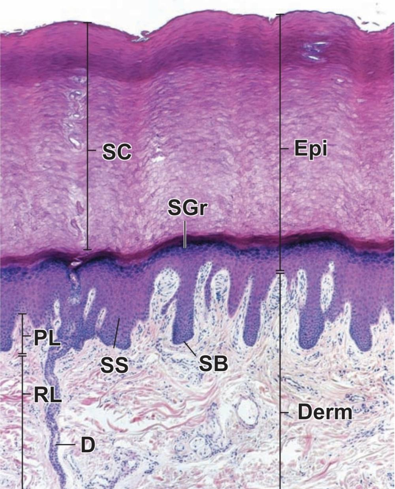
Pele espessa: SC estrato córneo, SGr granuloso, SS espinhoso, SB basal, Epi epiderme, Derm derme (PL e RL: derme papilar e reticular)
Estrato (da profundidade à superfície)
Principais características
1. Basal
Camada única de células cilíndricas baixas ou cúbicas, núcleos ovais e citoplasma basófilo. Tem atividade mitótica. Citoesqueleto de filamentos de queratina, cujos feixes formam as tonofibrilas; também RER, ribossomos livres e o aparelho de síntese de queratina (K5 e K14), que dão resistência mecânica à camada celular.
2. Espinhoso
Pelo menos 3-4 camadas (frequentemente mais). Células maiores, poliédricas, levemente achatadas na parte superficial; núcleos redondos e centrais; citoplasma com basofilia moderada e mais tonofibrilas que o basal (K1 e K10). Prolongamentos de células vizinhas se unem formando as pontes intercelulares (desmossomos), que lembram espinhos — daí o nome. Produzem involucrina (proteína de envoltório, na face interna da membrana plasmática) e corpos lamelares (de Odland).
3. Granuloso
3-5 camadas de células achatadas, com eixo longo paralelo à superfície. Citoplasma com número crescente de grânulos muito basófilos, os grânulos de queratohialina, que contêm profilagrina (proteína com fósforo) — convertida em filagrina no estrato córneo, que agrega os filamentos de queratina em feixes densos.
4. Lúcido
Faixa delgada, muito eosinófila, entre o granuloso e o córneo; poucas camadas de células achatadas e densamente agrupadas. Os núcleos começam a se degradar nas células externas do granuloso e desaparecem no lúcido, onde só o contorno do núcleo se distingue em células isoladas.
5. Córneo
Numerosas camadas de células planas totalmente queratinizadas e anucleadas (células córneas). Aparece como uma faixa espessa, muito eosinófila, de lâminas onduladas onde as células não se distinguem. Cada célula córnea = feixes de filamentos de queratina + filagrina, envoltos por membrana celular espessada. Na superfície há descamação contínua: é o estrato disjunto (descamativo).
🧠 Mnemônico (do fundo para a superfície):Bons Estudantes Guardam Lições Claras = Basal, Espinhoso, Granuloso, Lúcido, Córneo.
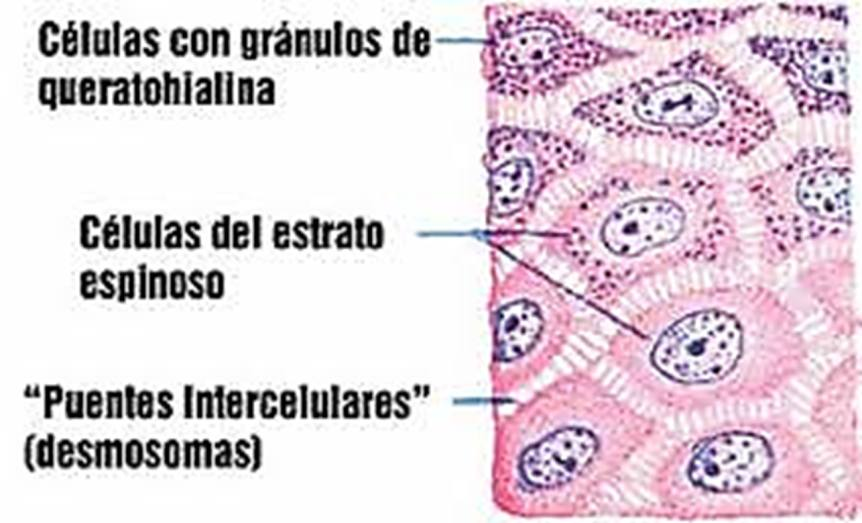
Células do estrato espinhoso e "pontes intercelulares" (desmossomos); acima, células com grânulos de queratohialina (legendas em espanhol)
📌 Pergunta clássica: "onde estão os grânulos de queratohialina?" — estrato granuloso. "Onde há mitose?" — estrato basal (e as camadas mais profundas do espinhoso, em menor grau, no complemento padrão).
🧴 Pele Fina e Renovação da Epiderme
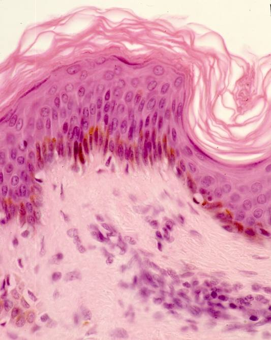
Pele fina: epiderme delgada, estrato córneo descamando e pigmento melânico (marrom) na região basal, sobre derme papilar
Na pele fina a epiderme é muito mais delgada, sobretudo porque o estrato córneo é mais estreito. O estrato espinhoso tem menos camadas, o granuloso tem uma única camada e o lúcido falta por completo.
Crescimento e diferenciação
A epiderme é uma camada dinâmica, em renovação constante.
Uma pequena parte das células basais funciona como células-tronco.
Segundo o material do curso, essas células se dividem de forma simétrica (ver nota de incerteza no fim do capítulo).
A produção de células do estrato basal está em equilíbrio com a eliminação das células córneas da superfície. O período de renovação da epiderme no ser humano é de cerca de 4 semanas (o material cita ainda 20-30 dias: "as células epidérmicas são substituídas a cada 20-30 dias").
💡 Hot Spot: renovação ≈ 4 semanas. Em doenças de hiperproliferação, como a psoríase, esse tempo cai drasticamente (ver correlações clínicas).
🧴 Melanócitos e a Cor da Pele
A cor da pele se deve a três pigmentos e à dispersão da luz: hemoglobina, carotenos e melanina.
Aspecto
Detalhe
Morfologia
Corpo celular arredondado, pouco pigmentado, do qual saem numerosos prolongamentos ramificados. Os grânulos de melanina (marrom-amarelados) ficam apenas nos prolongamentos
Ultraestrutura
Típica célula "glandular": abundante RER e muitas pilhas de cisternas de Golgi
Origem
Crista neural → migram como melanoblastos para a epiderme → aparecem como melanócitos na 11ª semana de vida fetal
Melanina
Produto de polimerização da tirosina; a síntese exige a enzima tirosinase
Melanossomo
Organela específica que contém tirosinase e é a sede da síntese de melanina. Na microscopia de luz, os melanossomos ricos em melanina são os "grânulos de melanina"
Número
A quantidade de melanócitos não varia com a cor da pele
🟢 Controle hormonal da pigmentação: o MSH (hormônio estimulante dos melanócitos) é formado localmente pelos queratinócitos quando expostos à luz ultravioleta; atua nos melanócitos de modo parácrino ou autócrino, aumentando a pigmentação. O MSH também é formado na hipófise. Os hormônios ovarianos também influenciam.
🔴 Correlação Clínica (complemento): no albinismo os melanócitos existem em número normal, mas a tirosinase é deficiente — o que reforça que a cor depende da atividade/quantidade de melanina, não do número de melanócitos.
🧴 Células de Langerhans e Células de Merkel
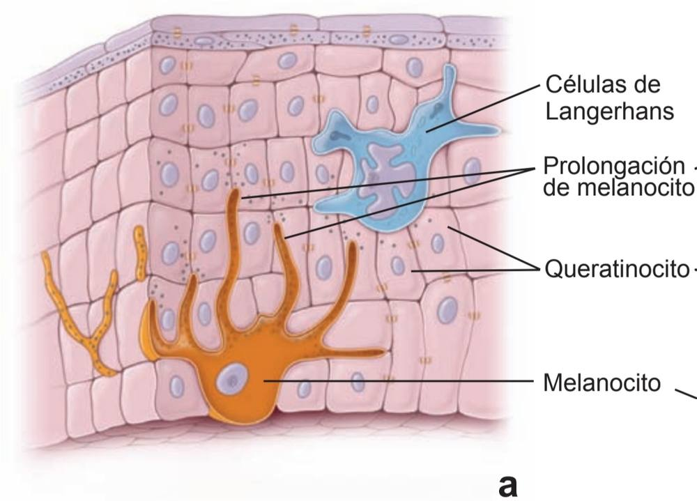
Esquema (legendas em espanhol): melanócito com prolongamentos entre queratinócitos e célula de Langerhans na epiderme
Célula
Características
Célula de Langerhans
Células apresentadoras de antígeno; maior frequência no estrato espinhoso.
Marca ultraestrutural: grânulos de Birbeck, em forma de bastão com estriação transversal regular — semelham uma raquete. Formação e função desses grânulos são desconhecidas.
Originam-se de precursores da medula óssea, chegam à pele pelo sangue e migram para a epiderme, onde se diferenciam.
Após captar o antígeno, deixam a epiderme e migram para os linfonodos regionais, onde se transformam em células dendríticas interdigitantes que apresentam o antígeno aos linfócitos T.
Permanecem cerca de 3 semanas na epiderme. Há cerca de 1 bilhão delas, com renovação diária de ~45 milhões.
Célula de Merkel
Localiza-se no estrato basal da epiderme; é mecanorreceptora; ocorre em maior número nas pontas dos dedos das mãos.
🧠 Mnemônico:Langerhans = Linha de defesa (apresenta antígeno, raquete de Birbeck). Merkel = Mecanorreceptor.
🧴 Derme (Cório)
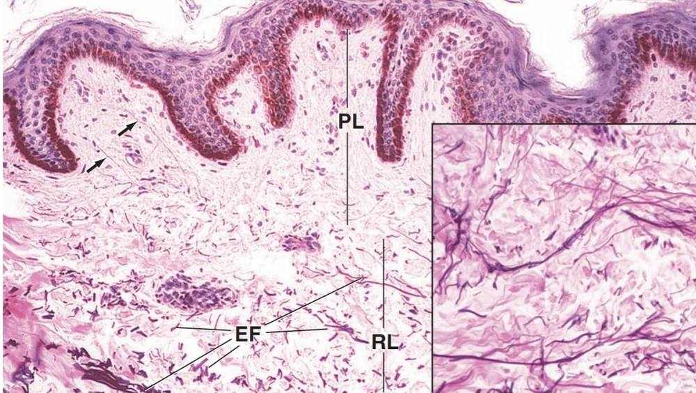
Epiderme e derme: PL derme papilar, RL derme reticular, EF fibras elásticas (coloração específica; detalhe em destaque)
A derme é a espessa camada de tecido conjuntivo à qual a epiderme se fixa e que se continua em profundidade com o tecido subcutâneo, rico em lipídios. Nela estão inseridos os folículos pilosos e as glândulas sudoríparas e sebáceas. Compõe-se de duas camadas não muito nítidas.
Camada
Características
Estrato papilar
Mais delgado; fica junto à epiderme (forma as papilas dérmicas). Contém terminações sensitivas como os corpúsculos de Meissner; tecido conjuntivo frouxo com capilares (complemento padrão)
Estrato reticular
Mais espesso, por baixo do papilar. Muito mais denso, com fibras colágenas grossas (sobretudo tipo I) em grandes feixes e abundantes fibras elásticas formando rede entre os feixes de colágeno. Células: fibroblastos, macrófagos e grande quantidade de mastócitos. Contém glândulas sudoríparas, essenciais para a termorregulação
Músculo na derme
Músculo liso: em parte como músculos eretores do pelo; em parte como rede mais coesa na região profunda do estrato reticular da pele das aréolas mamárias, pênis, escroto e períneo.
Músculo estriado: na pele da face (músculos da expressão facial).
🔴 Correlação Clínica: quando a derme é lesionada, o organismo repara com colágeno. Se a produção for excessiva, a cicatriz fica elevada (cicatriz hipertrófica/queloide). Lesões que atingem a derme reticular cicatrizam com fibrose; lesões só da epiderme se regeneram.
🧴 Hipoderme (Tecido Subcutâneo)
Caracteriza-se pelo conteúdo muito variável de gordura de depósito (varia entre indivíduos e regiões).
Retináculos cutâneos dividem o tecido subcutâneo em compartimentos bem definidos, onde fica a gordura.
Funções: depósito de energia e isolante para manter o calor corporal em ambientes frios.
💡 Hot Spot: a hipoderme (tecido subcutâneo) não faz parte da pele propriamente dita (epiderme + derme), mas é a camada em que a pele se apoia. Corpúsculos de Pacini ficam nessa região profunda.
Os anexos cutâneos ou fâneros são estruturas de origem epidérmica: pelo, unhas e glândulas sebáceas e sudoríparas.
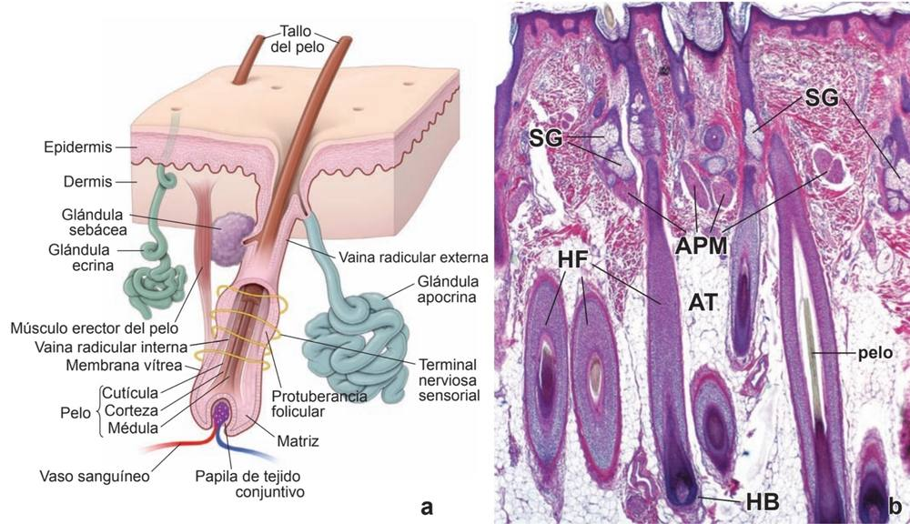
a) Esquema do folículo piloso (legendas em espanhol). b) Corte histológico: HF folículo piloso, HB bulbo piloso, SG glândula sebácea, APM músculo eretor do pelo, AT tecido adiposo
Conceito
Descrição
Velos / pelos terminais
Pelos finos (velos) x pelos terminais, mais espessos
Folículo piloso
Invaginação epidérmica que aloja a raiz do pelo
Bulbo piloso
Dilatação da base do folículo
Papila dérmica
Projeção de tecido conjuntivo (com vasos) que penetra no bulbo
Haste (tallo) e raiz
Porção livre = haste do pelo; porção fixa = raiz do pelo, que o prende ao folículo
No ser humano, os pelos têm particular importância para o sentido do tato.
A metade inferior da papila é rodeada por células com atividade mitótica, que formam a matriz.
As células recém-formadas se deslocam para cima e se diferenciam em vários tipos, dos quais se formam o pelo e a bainha radicular interna.
A bainha radicular interna sofre queratinização, que termina perto da zona de transição entre os terços inferior e médio da raiz do pelo.
O pelo queratinizado maduro não contém células visíveis.
🟢 Complemento padrão: o pelo tem medula, córtex e cutícula (de dentro para fora); ao redor, bainhas radiculares interna e externa. O músculo eretor do pelo liga a bainha da raiz à derme papilar (arrepio). A protuberância (bulge) abriga células-tronco. O pelo cresce em ciclos: anágena (crescimento), catágena (regressão) e telógena (repouso).
🧴 Glândulas Sebáceas
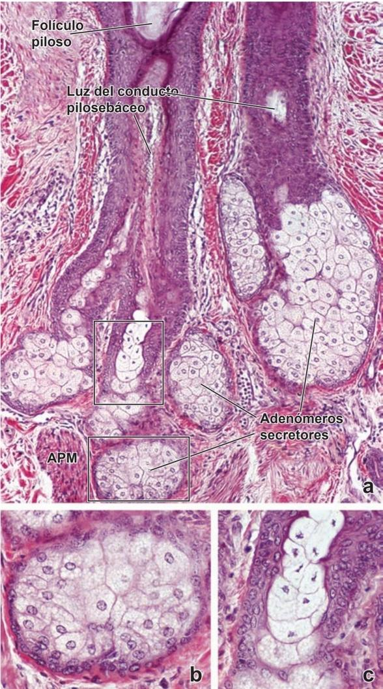
a) Glândula sebácea: adenômeros secretores ao redor do folículo piloso (APM músculo eretor do pelo). b, c) Detalhes das células sebáceas com citoplasma claro e vacuolizado
Encontram-se em toda a superfície externa do corpo e relacionam-se com os folículos pilosos (unidade pilossebácea), com grande abertura para o exterior (os "poros").
A porção secretora é formada por alvéolos arredondados (em conjunto parecem cacho de uva) que se abrem num ducto excretor curto, expelindo o sebo (unto sebáceo).
O sebo é uma mistura de lipídios: triacilgliceróis, ésteres de cera e esqualeno.
A secreção é holócrina: as próprias células da glândula se desprendem e passam a fazer parte da secreção.
O sebo tem atividade antioxidante e antibacteriana, o que pode ser relevante para a proteção da pele.
Forma a primeira linha de defesa contra invasão bacteriana, graças ao seu leve poder antisséptico.
É particularmente importante nos climas tropicais, em que a camada superficial sofre constante dessecação e descamação. Sem esse lubrificante levemente gorduroso, a pele não resistiria ao desgaste diário, perderia a umidade normal e o organismo ficaria exposto à desidratação.
🔴 Correlação Clínica:acne vulgar é uma doença da unidade pilossebácea: androgênios aumentam a produção de sebo, o infundíbulo folicular se obstrui por hiperqueratinização (comedão) e a proliferação de Cutibacterium acnes desencadeia inflamação (pápulas, pústulas). Atinge sobretudo face, tórax e dorso, onde as glândulas sebáceas são mais numerosas.
🧴 Glândulas Sudoríparas — Écrinas e Apócrinas
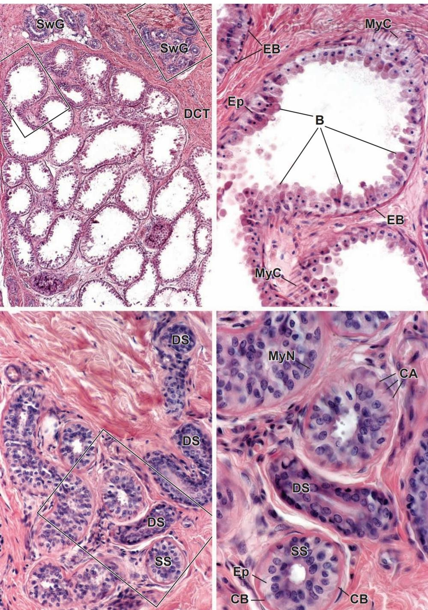
Painéis superiores: glândula sudorípora apócrina com luz ampla e projeções apicais (B) e células mioepiteliais (MyC). Painéis inferiores: porção secretora (SS) e ductos (DS) de glândula sudorípora écrina
Característica
Écrinas
Apócrinas
Localização
Quase toda a superfície do corpo, exceto lábio, clitóris, pequenos lábios, glande e face interna do prepúcio; mais numerosas na palma das mãos e planta dos pés
Axilas, região anogenital, conduto auditivo externo (ceruminosas), aréola mamária, pálpebras superiores (glândulas de Moll)
Tipo
Tubulares simples
Tubular simples; porção secretora enovelada na profundidade da derme
Células
Mioepiteliais, células claras (eosinófilas) e células escuras (basófilas)
Epitélio secretor de células cúbicas com núcleo redondo; entre elas e a lâmina basal há células mioepiteliais
Secreção
Glândulas "verdadeiras" (écrinas/merócrinas): a célula secretora não faz parte da secreção
Mais viscosa (complemento padrão); odor após ação bacteriana; ativação na puberdade
Função
Termorregulação: o suor evapora e o corpo perde o excesso de calor
Resposta a estímulos emocionais/hormonais (complemento)
💡 Hot Spot: as sudoríparas ficam no estrato reticular da derme. Sebácea = holócrina (a célula entra na secreção); écrina = a célula não faz parte da secreção. As células mioepiteliais contraem e ajudam a expulsar o produto.
🧴 Unha
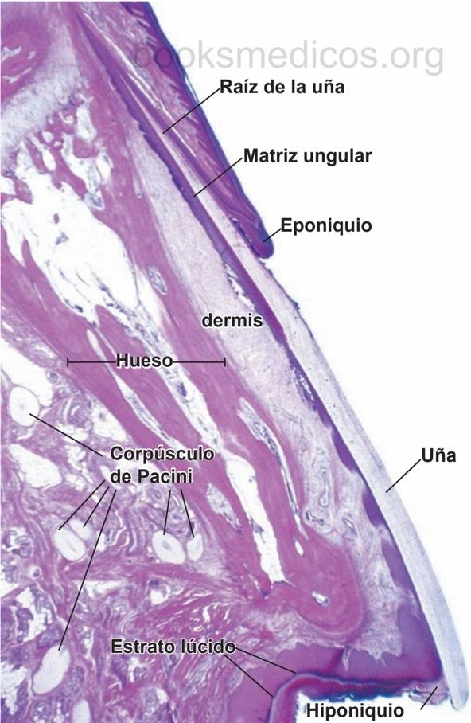
Corte longitudinal da ponta do dedo (legendas em espanhol): raiz da unha, matriz ungueal, eponíquio, derme, osso, corpúsculos de Pacini, estrato lúcido, hiponíquio e unha
A unha é um anexo cutâneo queratinizado, de origem epidérmica. No corte longitudinal da ponta do dedo identificam-se: raiz da unha, matriz ungueal, eponíquio, derme, osso (falange), corpúsculos de Pacini, estrato lúcido e hiponíquio.
🟢 Complemento padrão: a matriz ungueal é a região proliferativa que produz a lâmina ungueal (placa dura de queratina); o eponíquio é a "cutícula" (prega do estrato córneo sobre a base da lâmina); o hiponíquio é o epitélio espessado sob a margem livre da unha; o leito ungueal é a epiderme sobre a qual a lâmina desliza. Unhas das mãos crescem cerca de 3 mm por mês.
🔴 Correlações Clínicas
Condição
Base histológica
Melanoma
Neoplasia maligna dos melanócitos (crista neural). Triagem pela regra do ABCDE: Assimetria, Bordas irregulares, Cor variada (mais de um tom), Diâmetro > 6 mm, Evolução (mudança em tamanho, forma, cor, sintomas). Prognóstico depende da espessura de invasão (Breslow). Radiação UV é principal fator de risco.
Carcinoma basocelular / espinocelular
Originam-se de células do estrato basal e do espinhoso, respectivamente (complemento padrão)
Acne vulgar
Inflamação da unidade pilossebácea (sebo, hiperqueratinização folicular, C. acnes)
Psoríase
Doença inflamatória com hiperproliferação dos queratinócitos: o tempo de renovação cai de ~4 semanas para poucos dias; epiderme espessada (acantose), com queratinização incompleta (paraqueratose) e diminuição/ausência do estrato granuloso; placas eritematodescamativas
Queimaduras
1º grau: só epiderme (eritema, sem bolha). 2º grau superficial: epiderme e derme papilar (bolhas, regeneram a partir dos anexos). 2º grau profundo: atinge a derme reticular. 3º grau: toda a espessura, destruindo anexos; precisa de enxerto. Perda da barreira leva a desidratação, infecção e perda de calor
Cicatriz hipertrófica / queloide
Lesão da derme: produção excessiva de colágeno repara o dano e deixa a cicatriz elevada
Pênfigo
Autoanticorpos contra proteínas de adesão dos desmossomos do espinhoso — perda de adesão (acantólise) e bolhas (complemento padrão)
💪 Fixação rápida
✅ O que você deve lembrar
Pele = maior órgão funcional (1,5-2 m²). Epiderme = epitélio plano estratificado queratinizado; derme (papilar + reticular); hipoderme. Estratos (profundo para superficial): basal, espinhoso, granuloso, lúcido, córneo. Pele fina: sem lúcido, 1 camada de granuloso. Fina/espessa refere-se à epiderme. Queratinócitos = maioria; não queratinócitos = melanócitos, Langerhans, linfócitos, Merkel. Tirosina + tirosinase no melanossomo = melanina; nº de melanócitos não varia com a cor. Langerhans: Birbeck (raquete). Pacini = pressão; Meissner = tato; Ruffini = tensão. Sebácea = holócrina; sudoríparas na derme reticular. Renovação da epiderme ~4 semanas.
⚠️ Erro comum
Dizer que a pele escura tem mais melanócitos (o número é igual; muda a atividade/quantidade de melanina). Esquecer que "pele fina/espessa" é espessura da epiderme, não da pele toda. Confundir os grânulos de queratohialina (granuloso) com os grânulos de melanina (basal/prolongamentos dos melanócitos). Confundir Langerhans (imune, espinhoso) com Merkel (sensitiva, basal). Trocar sebácea (holócrina) com écrina (a célula não entra na secreção). Atribuir hipoderme à "pele propriamente dita".
⚡ Quiz rápido
Que estrato falta na pele fina?
O estrato lúcido (e o granuloso tem só 1 camada).
🧠 Auto-explique
Explique com suas palavras por que uma queimadura superficial cicatriza sem deixar marca e uma que atinge a derme reticular deixa cicatriz.
Células-tronco do estrato basal e dos anexos regeneram a epiderme (renovação ~4 semanas); lesão da derme é reparada com colágeno (fibrose).
Notas de incerteza: (1) o material do curso descreve a divisão das células-tronco basais como "simétrica"; a literatura clássica descreve também divisão assimétrica (uma célula-filha permanece como tronco e outra diferencia-se). (2) Itens marcados como "complemento padrão" não constam nos slides e vêm de textos clássicos de histologia.
🩺 Caso Clínico Progressivo — Da Pinta Suspeita à Queimadura
Vamos acompanhar situações clínicas ligadas à histologia da pele: lesão pigmentada, unidade pilossebácea e reparo após queimadura. O caso evolui em 3 níveis — clica em cada um pra ver como as coisas vão se desenrolando.
🩺 Recomendado pela ClinicusMed
🎥 Complemento em Vídeo
A Clinicus selecionou este conteúdo para complementar seu estudo. Não substitui a leitura do resumo — o resumo ensina, o vídeo reforça.
Carregando recomendações...
🃏 Flashcards — SM-2 real + interface Anki
O sistema guarda, no seu navegador, quais cards você já sabe bem e quais precisam voltar mais cedo — cada vez que você avalia um card, ele recalcula quando ele deve voltar.
Cartão 1 / 0Dominados: 0
PERGUNTA
RESPOSTA
✅ Banco de Questões Comentadas
14 questões, do mais básico ao mais puxado. Escolhe uma alternativa, depois clica em "Ver comentário completo" — vale a pena ler até quando você acerta, porque o comentário explica cada alternativa, não só a certa.
🎮 Quiz Rápido
🖼️ Atlas de Imagens — Pele e Anexos
Todas as imagens desse capítulo, reunidas num só lugar pra revisão rápida.